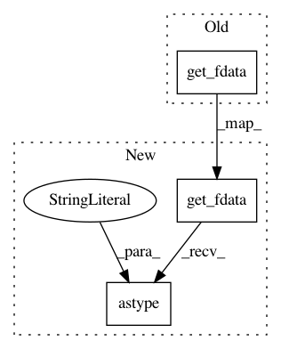

a6910af1a33f6457bf42b9e15625ac7cbdcde075,pynets/registration/reg_utils.py,,gen_mask,#Any#Any#Any#,22
Before Change
else:
// Check if already skull-stripped. If not, strip it.
img = nib.load(t1w_head)
t1w_data = img.get_fdata()
perc_zero = np.count_nonzero(np.nan_to_num(np.array(
t1w_data < 10).astype("int"))) / np.count_nonzero(
np.nan_to_num(t1w_data.astype("bool").astype("int")))
// TODO: find a better heuristic for determining whether a t1w image has
After Change
else:
// Perform skull-stripping if mask not provided.
img = nib.load(t1w_head, mmap=False)
t1w_data = img.get_fdata().astype("float32")
try:
t1w_brain_mask = deep_skull_strip(t1w_data, t1w_brain_mask, img)
except RuntimeError:
print("Deepbrain extraction failed...")
In pattern: SUPERPATTERN
Frequency: 4
Non-data size: 3
Instances
Project Name: dPys/PyNets
Commit Name: a6910af1a33f6457bf42b9e15625ac7cbdcde075
Time: 2020-08-08
Author: dpisner@utexas.edu
File Name: pynets/registration/reg_utils.py
Class Name:
Method Name: gen_mask
Project Name: dPys/PyNets
Commit Name: a6910af1a33f6457bf42b9e15625ac7cbdcde075
Time: 2020-08-08
Author: dpisner@utexas.edu
File Name: pynets/registration/reg_utils.py
Class Name:
Method Name: match_target_vox_res
Project Name: dPys/PyNets
Commit Name: 562ce1a98dd3131d1623dd1cee1cd07192b156a6
Time: 2019-08-14
Author: dpisner@utexas.edu
File Name: pynets/dmri/estimation.py
Class Name:
Method Name: streams2graph
Project Name: dPys/PyNets
Commit Name: e4a36f3215735f8c351beb8f27edeb02eabb121f
Time: 2019-11-04
Author: dpisner@utexas.edu
File Name: pynets/dmri/track.py
Class Name:
Method Name: prep_tissues